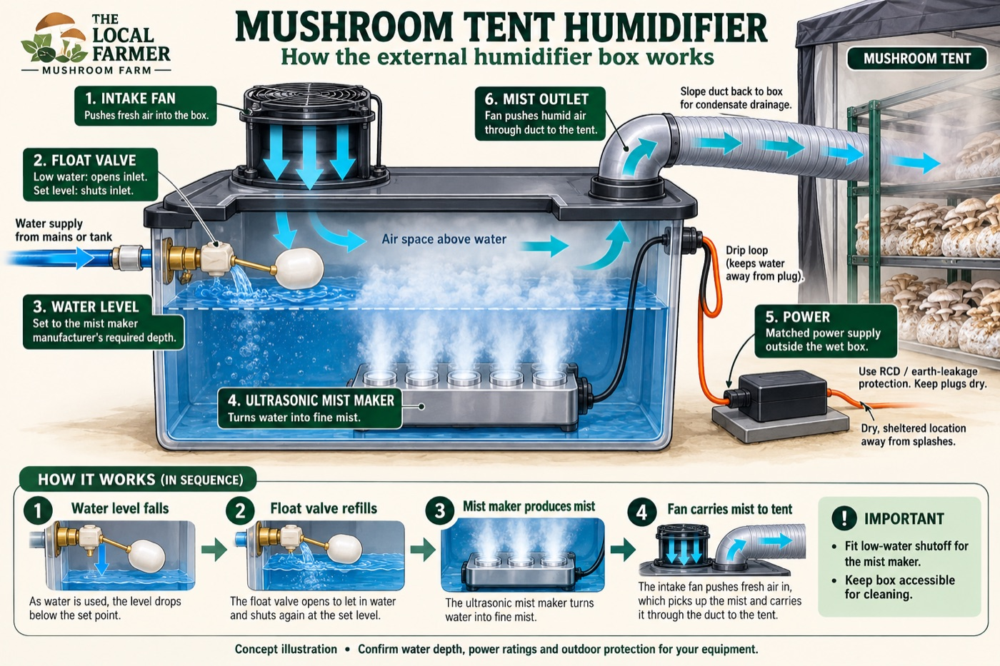

The Local Farmer · Mushroom Farm · Water System · Rev C
Eight machines, two tanks, and no pumpA plain-English explainer of how the water system works — written so a person can read it in five minutes — followed by a picture brief for Google: six images, with the exact words to paste in.
The room holds eight growing machines. Each one has a tank in its base that must stay full. The drawings show how water gets from the town main, through two tanks and a filter, along the ceiling, and down into every machine — and how the box in the corner makes the mist. This page says the same thing in words, then asks Google to make it beautiful.

The look we are matching — attach this image to every prompt. It is the standard for depth, colour, light and callout style: cream paper, translucent plastic, soft light from the top left, numbered green badges on leader lines, one dominant object. Without this attached, a model invents its own style and the six pictures will not look like one set.
What we are asking for
Six illustrations that replace the technical drawings as the front door — the thing Ricardo shows a client, a plumber or a new staff member. They must be true to the system (nothing invented, no pump where there is no pump) and they must be lovely to look at.
The technical sheets stay as the annex for the installer. These six are for understanding. Every fact needed is on this page; nothing needs to be researched.
Two things to give the model every time: the reference image above, and the prompt for the picture you want. Prompt alone gets you a different style; image alone gets you a copy of the humidifier box.
PART ONE — THE SYSTEM, IN PLAIN ENGLISHThe whole thing in one paragraph
Water arrives from the town main at pressure and fills the first tank, a big plastic JoJo. From there it falls — by gravity, through a filter — into a second JoJo. That second tank stands high enough that its water level is about 0.8 m above the pipe that leaves it, and that height is the pump. The pipe runs along the room at waist height, above the machines, and drops down at four places. Each drop feeds a line of machines: a small pipe runs along their backs and rises into each tank in turn. Every machine's tank keeps its own float switches and its own little pump, and they were fitted by the manufacturer. Nothing in the shared line is pumped. Gravity does it.
The chain the drawings show. Everything left of the ring main is falling water; everything right of it is a manifold filling tanks that have their own level control.
PART TWO — THE EIGHT STEPSWhat happens, in order
1 · The main fills the reserve
A 15 mm town connection at 200–400 kPa passes a ball valve and a backflow preventer, then a float valve inside the first JoJo. When that tank is full the float shuts the water off, exactly like a toilet cistern. Nothing else in the system sees mains pressure.
2 · It falls through the filter
The outlet is at the bottom of the first tank. Water leaves under its own weight, through a strainer, into a two-stage filter: a 5 µm sediment cartridge then a carbon block. No pump — the tanks are at the same height and water finds its level.
3 · The clean tank holds the head
The filtered water fills the second JoJo, again held by a float valve. This tank is the heart of the design: its water level sits about 0.8 m above the ring main, and that height is the only thing pushing water round the room. 0.8 m of water is about 8 kPa.
4 · The ring main runs the room
A 32 mm pipe leaves the bottom of the clean tank and runs around the room at 1.0 m above the floor — deliberately lower than the water level in the tank, because a pipe that runs higher than its supply will never fill. A flush valve sits at the far end.
5 · Four drops
At four places the ring main tees off and drops down: a small ball valve, a ½″ strainer, and a 24 V solenoid that is closed until it is switched on. Each drop is fed from above and lands at the head of a line of machines — never in the middle of one.
6 · A line feeds up to four machines
A 15 mm manifold runs along the backs of the machines, through the 50 mm slots between them, and rises into each tank through a grommet. It enters above the water line, so no tank can drain into its neighbour through the shared pipe.
7 · Each tank looks after itself
Inside every machine: a top float that calls for water, a bottom float that cuts the pump before it can run dry, and the machine's own pump. Those belong to the machine, not to this system. The shared pipe carries water and nothing else.
8 · The humidifier box makes the mist
A separate small box outside the room has its own float valve and its own drain. A duct carries mist into the tent and slopes back towards the box, so condensation runs away from the plants instead of dripping on them.
PART THREE — THE NUMBERSWhat is fixed, and why
A note on the names. Each machine in the room carries a number, GM01 to GM08, taken from the client's layout of 12 November 2026 — GM01 is the first machine on the north side, and so on round the room. The four letters A, B, C and D name the four places where a pipe drops down from the ring main; each one then serves the machines in its line. Nothing else in this brief uses a code.
Thing
Value
Why it matters
Town main
15 mm · 200–400 kPa
The only pressurised supply in the system.
Machines
8
Each 1,300 × 600 × 1,960 mm (width × depth × height), six shelves of six trays — 288 growing spaces in all.
Room interior
6,000 × 5,050 mm
Minimum clear working width between rows is 915 mm.
Gap between butted machines
50 mm
The manifold runs in this slot — never across a working face.
Ring main height
1.0 m
Below the clean tank's water line, and at waist height so it can be reached and isolated.
Head available at the ring
0.8 m of head ≈ 8 kPa
The entire driving force for the room. This is why there is no pump.
Ring main pipe
32 mm uPVC
Oversized on purpose: at low pressure, friction is the enemy.
Line manifold
15 mm
Runs along the backs, rises into each tank above the water line.
Feed drops
4
A = GM01+GM03 · B = GM02+GM04 · C = GM05+GM06+GM07 · D = GM08.
Solenoids
24 V, normally closed
Fail shut, not open. A manual bypass means one failed solenoid does not stop the room.
Machine pump schedule
10 min at 08:00 and 16:00
Batch, not continuous — which is why slow gravity filling is acceptable.
Room conditions
18–24 °C · 40–60 % RH
Lights 18 h on, 6 h off; fans 10 min every 30 min.
PART FOUR — THE SIX PICTURESWhat to make, with the words to paste
Same style for all six, so they read as one set. Each one is a cutaway illustration, not a photograph and not a CAD drawing: soft light from the top left, translucent plastic so you can see the water inside, one clear direction of travel, numbered green badges, and a short caption band at the foot.
Picture 1 — The whole system, one page
Must show: town main entering at the left → first tank (reserve) → filter pack → second tank (clean) standing higher → ring main along the room → four drops → eight machines in a row, each with a tank in its base. Nothing between the tanks but a filter.
Must not show: any pump or pressure vessel in that line. The only pump is the small one inside each machine.
Prompt — paste into GeminiCreate a warm, editorial cutaway illustration on cream paper (#F8F4EA) of a mushroom farm water system, viewed slightly from above at an angle, in the style of a beautifully drawn technical infographic for a design magazine. Left to right: a 15 mm town water pipe entering a large translucent plastic water tank; a small two-cartridge filter beside it; a second identical tank standing on a raised plinth, visibly higher; a thick pipe leaving the bottom of that second tank, running along the wall at waist height; four vertical drops hanging from it; and a row of eight tall white growing cabinets, each with a small water tank visible in its base. Show the water level inside both tanks as a clean horizontal line with a soft blue tint, and show the height difference between the second tank's water level and the horizontal pipe with a thin dimension line labelled "0.8 m". Use a muted palette of cream, deep forest green, steel grey, water blue and a single warm cyan for arrows. Add small solid green numbered badges 1 to 8 with short handwritten-style labels. Soft studio light from the top left, gentle shadows. No text other than the short labels. No pump anywhere in the long pipe.
Picture 2 — The two tanks and the filter
Must show: the mains coming in, the float valve inside the first tank, the water level, the outlet at the bottom, the filter pack, and the second tank with its own float. Add a small side panel showing what you get with the tanks standing on the floor (about 8 kPa) and what each metre of plinth adds — one metre takes it to about 18 kPa, two metres to about 28 kPa.
Prompt — paste into GeminiCreate a close cutaway illustration of two large semi-transparent plastic water tanks standing side by side on a concrete floor, one slightly taller plinth under the right-hand tank, in the style of a premium hand-drawn engineering infographic on cream paper. Show the water inside both with a soft blue gradient and a clean waterline. In the left tank, show a brass float valve on a small arm at the top, holding the level. Show a pipe leaving the bottom of the left tank, passing through a compact two-stage filter with a visible 5-micron cartridge and a carbon block, and entering the top of the right tank, which also has a float valve. In the right tank, draw a vertical dimension from the waterline down to the pipe outlet labelled "0.8 m". Add a slim panel on the right with three simplified plinth heights and the pressure each gives: 8 kPa, 18 kPa, 28 kPa, drawn as a small bar chart. Palette: cream paper, deep forest green headings, steel grey fittings, water blue, brass accents. Soft top-left light, subtle shadow, no clutter.
Picture 3 — One drop, four machines in a line
Must show: four machines standing in a straight line, seen from behind; one pipe arriving at the head of the row; a manifold running along their backs through the narrow slots; a short riser into each tank; each riser entering above the water line.
Prompt — paste into GeminiCreate a three-quarter cutaway illustration of four identical tall white growing cabinets standing in a straight line, viewed from behind so their back panels and base tanks are visible, in the style of a high-end technical infographic on cream paper. One horizontal pipe arrives at the left end of the row and turns into a slim manifold that runs along the backs of all four machines, passing through the narrow gaps between them, with a short vertical riser rising into each machine's base tank through a rubber grommet. Show the water inside each base tank as a soft blue shape with a clear waterline, and show each riser ending above that waterline. Label the four machines M01 to M04 and put a small green numbered badge on: the drop at the head, the manifold, one riser, and one grommet. Palette: cream paper, deep forest green, steel grey, water blue, one warm cyan for flow arrows. Cutaway style with clean section edges, soft light from the top left. Do not draw a pump anywhere on the manifold.
Picture 4 — Inside one machine's tank
Must show: the base tank in section, the water level, the manufacturer's pump at the bottom, the top float that calls for water, the bottom float that cuts the pump, the fill riser entering above the water line.
Prompt — paste into GeminiCreate a magnified cutaway section of the base water tank inside a growing cabinet, drawn like a premium museum exhibit illustration on cream paper. Show the tank walls in section, water filling most of the tank with a soft blue gradient and a crisp waterline, a small submersible pump sitting on the floor of the tank, and two float switches on vertical rods against the wall: one near the top labelled "calls for water", one near the bottom labelled "cuts the pump". Show a thin fill pipe entering through the side wall above the waterline, with a rubber grommet at the penetration. Add a subtle purple dashed line from the bottom float to the pump to show the safety interlock. Palette: cream, deep forest green, steel grey, water blue, brass details, purple for the low-voltage control. Soft top-left lighting, gentle shadow, no clutter, short labels only.
Picture 5 — The humidifier box
Must show: the box outside the tent, its own float valve and water supply, the ultrasonic mist maker in the water, the mist leaving through the outlet, the duct into the tent sloping back towards the box, and the drain.
Prompt — paste into GeminiCreate a warm cutaway illustration of a small humidifier box standing outside a grow tent, drawn as an educational infographic on cream paper. The box is a clean white plastic enclosure with a removable lid; inside, show a shallow reservoir of water, a small brass float valve on the incoming supply, and a flat ultrasonic mist maker disc sitting in the water sending up a soft white mist. Show a short outlet on the side of the box with a duct running into the tent, and give the duct a visible gentle slope so condensation runs back towards the box. Show a small drain at the bottom of the box. Use six small green numbered badges for: float valve, water level, mist maker, power, mist outlet, and the sloped duct. Palette: cream paper, deep forest green, water blue, mist white, steel grey, a single orange for the power cable. Soft light, clean shadows, uncluttered, short labels only.
Picture 6 — What happens when
Must show: four small panels in a row — tank filling; tank full and the float shut; a drop calling for water; the bottom float cutting the machine's pump. This is the one that teaches, so it should read without a caption.
Prompt — paste into GeminiCreate a horizontal four-panel sequence illustration, like a beautifully drawn instruction card on cream paper, showing how a water tank keeps itself at the right level. Panel one: water falling into a translucent tank, the level rising, one green badge. Panel two: the level at the top, a brass float valve shut, a small tick mark, one green badge. Panel three: a pipe calling for water, drawn with a cyan arrow, the level slightly down. Panel four: the level near the bottom and a small pump with a purple dashed cut line through it, showing it has stopped. Each panel is a rounded square with a thin border and a short label beneath. Palette: cream paper, deep forest green, water blue, steel grey, cyan for flow, purple for the safety interlock. Flat, clean, friendly, no clutter, no photographic textures.
PART FIVE — THE LOOKArt direction, so all six match
Cream paper#F8F4EA · the ground
Forest green#0E4A2A · headings
Deep green#1E5A38 · callout boxes
Water#0E4E73 · base of every tank
Water mid#1F6F9E · body of water
Water light#79C7E8 · highlight, meniscus
Steel#B8C1C7 · fittings
Brass#B8862F · valves
Cyan#18B7E6 · flow arrows
Orange#E8641C · cable, drains
Sage#DDEEDD · important boxes
Do
One dominant object per picture, lit from the top left.
Translucent plastic, so the water inside is visible.
Numbered solid green badges with thin leader lines.
One direction of travel, left to right, arrows in cyan.
Serif headings in small caps; sans-serif labels.
Room to breathe — cream space is part of the picture.
Don't
No pump in the long line between the tanks, and none on the ring main.
No ring main drawn higher than the clean tank's water level.
No pipe crossing a machine's working face.
No photorealistic textures, no dark or neon backgrounds.
No invented dimensions, part numbers or extra tanks.
No watermark, logo or signature.
PART SIX — NEVER CHANGE THESEThe facts the pictures must not bend
No pump in the shared line. Water moves by mains pressure into the reserve and by gravity everywhere after that. The only pumps are inside the machines, and they belong to the machine.
The ring main is lower than the clean tank's water level. 1.0 m ring, ≈0.8 m of head above it. Raise the pipe above the tank and nothing flows — this is the single rule that makes the design work.
One drop feeds a line of machines, up to four, from its head — not one drop per machine, and never a drop in the middle of a line.
Every riser enters above the water line. That is what stops one tank siphoning into another through the shared pipe.
The shared pipe carries water only. Each machine keeps its own float switches and its own pump.
Slow fill is intended. The machines draw water in two ten-minute batches a day; there is no need for a high flow rate, which is exactly why gravity is enough.
PART SEVEN — WHERE THE SOURCE ISFor anyone who wants the detail